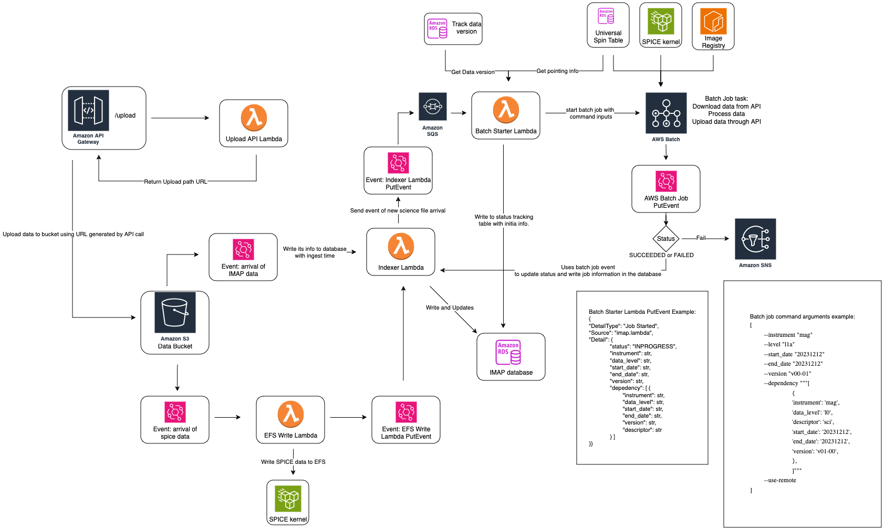

Data Dependency Management#
The IMAP Science Data Center (SDC) utilizes an event-based processing system that allows for processing as soon as data is available. This system is designed to be flexible to accommodate the various requirements and inter-dependencies for all 10 instruments.
As part of our requirements, we need some way to explicitly describe the dependencies for each file. We also need to be able to flexibly update the dependencies on a regular basis, to accommodate changing requirements.
Overview#
When a file lands in the SDC, it is added to our data bucket (Also called S3 or S3 bucket.) This bucket, as the name implies, is a simple collection which contains all the files in the SDC, organized like a file system.
Each data file is put into a specific subfolder depending on the file name. For example, a file named imap_swe_l0_sci_20240105_20240105_v00-01.pkts would be placed in the imap/swe/l0/2024/01 folder.
More information about the naming conventions can be found in Science File Naming Conventions.
When a file of any level arrives in the bucket, it triggers the rest of processing. This is how we manage file processing within the SDC, rather than waiting until all files have arrived or running at particular times of day. This allows us to quickly process data as soon as all the required pieces are available to us, and create a flexible system which can easily be updated to add exceptions or new requirements on a per-instrument or per-level basis.
Note
This document, and our tooling, uses the terms “upstream dependencies” and “downstream dependencies” to describe the relationships between files. A “downstream dependency” for a given file means that the current file is required for processing of the downstream files. For example, an L2 file is a downstream dependency of an L1 file. An “upstream dependency” is the opposite, describing a file which is required to begin processing the current file. For example, an L1 file is an upstream dependency of an L2 file.
Detailed Description of File Processing#
For explicit descriptions of the tools and technical choices of the IMAP SDC, please refer to this Galaxy page. This section is intended to act as a high level overview for the data processing architecture of the IMAP SDC, in less technical terms.

Up to date overview chart in Galaxy
Each science file that arrives is treated the same, regardless of level or instrument. When a file is placed in the file storage system, it triggers a step to index the file (“indexer lambda”). This step adds the file to the database and triggers the next step in processing (“batch starter lambda”).
This step is what determines if a instrument and level is ready for processing, by checking dependencies. For each file that arrives, the system checks to see what the downstream dependencies are -
meaning, what future files need this file in order to complete processing. For example, if a MAG L1A file arrived, this step would determine that the MAG L1B mago and magi files are dependent on
the L1A file, and therefore MAG L1B may be ready to begin processing.
Then, for each anticipated job, the batch starter process checks to see if all the upstream dependencies are met. Although we know we have one of the upstream dependencies for an expected job, it’s possible that there are other required dependencies that have not yet arrived. If we are missing any required dependencies, then the system does not kick off the processing job. When the missing file arrives, it will trigger the same process of checking for all upstream dependencies. This time all required dependencies will be found and the processing job will be started.
For example, SWAPI L3 requires both SWAPI L2 files and MAG L1D (previously called L2pre) files. The SWAPI L2 job and the MAG L1D job are run independently, so there is no guarantee that they will finish at the same time. Let’s assume that the MAG L1D job finishes first, since it is the lower level. When that file arrives, one of the downstream dependencies is going to be the SWAPI L3 processing. However, when batch starter checks the upstream dependencies for SWAPI L3, it will find that SWAPI L2 is missing. Therefore, processing won’t start. Once the SWAPI L2 processing finishes, and the SWAPI L2 file arrives, the batch starter is triggered with that file. Once again, SWAPI L3 is a downstream dependency, but this time, both upstream dependencies for SWAPI L2 are present. Therefore, processing for SWAPI L3 can begin.
The status of different files is recorded in the status tracking table. This table records the status of each anticipated output file as “in progress”, “complete”, or “failed.” Through this, we can track processing for specific files and determine if a file exists quickly.
Dependency Config File#
How does the SDC track which files are dependent on others? In order to decide what the downstream or upstream dependencies of a file are, and what the nature of those dependencies are, we need some way to request the upstream or downstream dependencies of a given file. The current dependencies between instruments are recorded in sds-data-manager Repo.
We handle and track dependencies using a CSV config file that acts like a database. This CSV config file expects a specific format, and is used to determine the upstream and downstream dependencies of each file.
The CSV config has the following structure:
primary_source |
primary_data_type |
primary_descriptor |
dependent_source |
dependent_data_type |
dependent_descriptor |
relationship |
dependency_type |
|---|---|---|---|---|---|---|---|
mag |
l1a |
norm-mago |
mag |
l1b |
norm-mago |
HARD |
DOWNSTREAM |
mag |
l1a |
norm-magi |
mag |
l1b |
norm-magi |
HARD |
DOWNSTREAM |
mag |
l1d |
norm |
swapi |
l3 |
sci |
HARD |
DOWNSTREAM |
swapi |
l2 |
sci |
swapi |
l3 |
sci |
HARD |
DOWNSTREAM |
idex |
l0 |
raw |
idex |
l1a |
all |
HARD |
DOWNSTREAM |
leapseconds |
spice |
historical |
idex |
l1a |
all |
HARD_NO_TRIGGER |
DOWNSTREAM |
spacecraft_clock |
spice |
historical |
idex |
l1a |
all |
HARD_NO_TRIGGER |
DOWNSTREAM |
hi |
l1a |
45sensor-de |
hi |
l1b |
45sensor-de |
HARD |
DOWNSTREAM |
plantary_epehemeris |
spice |
historical |
hi |
l1b |
45sensor-de |
HARD_NO_TRIGGER |
DOWNSTREAM |
imap_frames |
spice |
historical |
hi |
l1b |
45sensor-de |
HARD_NO_TRIGGER |
DOWNSTREAM |
attitude |
spice |
historical |
hi |
l1b |
45sensor-de |
HARD |
DOWNSTREAM |
spin |
spin |
historical |
hi |
l1b |
45sensor-de |
HARD_NO_TRIGGER |
DOWNSTREAM |
repoint |
repoint |
historical |
hi |
l1b |
45sensor-de |
HARD_NO_TRIGGER |
DOWNSTREAM |
Valid Values for Dependency Config#
Primary Source#
Primary source can be one of the following:
IMAP instrument name listed in the
VALID_INSTRUMENTSdictionary in this file: imap-data-access RepoSPICE data type listed in the
_SPICE_DIR_MAPPINGdictionary in this file: imap-data-access validation file
Primary Data Type#
Primary data type can be one of the following:
IMAP data level listed in the
VALID_DATALEVELSdictionary in this file: imap-data-access Repospicespinrepointancillary
Primary descriptor#
Primary descriptor can be one of the following:
For science or ancillary data, the descriptors are defined by the instrument and SDC.
For
spicedata types,historicalandbestare the valid descriptors.For
spinandrepointdata types,historicalis the only valid descriptor.
Dependent Source#
Same as primary_source, but for the dependent file.
Dependent Data Type#
Same as primary_data_type, but for the dependent file.
Dependent Descriptor#
Same as primary_descriptor, but for the dependent file.
Relationship#
HARD Triggers processing on file ingestion or a reprocessing event.
HARD_NO_TRIGGER Required data file. However, a new version of this file doesn’t trigger processing on file ingestion. Example: leapseconds kernel or frame kernel that doesn’t change often.
SOFT_TRIGGER A “nice to have” data file that can trigger processing on ingestion for downstream dependencies. Recommended only for ancillary or SPICE data files, because this may cause unwanted reprocessing behavior. Example: a calibration file that does significantly affect output and should cause reprocessing of past data falling within the updated time range.
SOFT_NO_TRIGGER A “nice to have” file that does not trigger processing on ingestion. Example: calibration files with minor updates that you still want included in processing for current and future data products.
Dependency Types#
DOWNSTREAM This is a downstream dependency, meaning that job to kick off when this file arrives.
UPSTREAM This is an upstream dependency. This means that upstream processing is blocked on the existence of dependent files, meaning that a file required to kick off processing for current file. NOTE: In the dependency config file, we only specify downstream dependencies. Then in the dependency lambda at run time, it will determine the upstream dependencies based on the downstream dependencies.